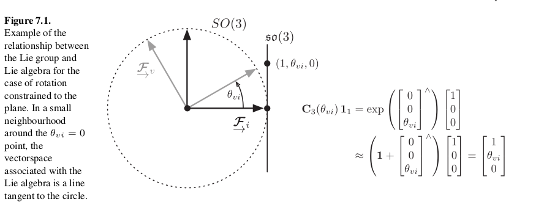

[Books] State Estimation for Robotics
Author: Mario
1. 引言
2. 概率论基础
3. 线性高斯系统的状态估计
4. 非线性非高斯系统的状态估计
5. 偏差，匹配和外点
6. 三维几何学基础
区别向量的变换关系与坐标的变换关系，前者没有数值上的计算，在没有指定参考系的时候，不知道其有几个维度
这边下箭头打不出来，带下箭头的都是矢量，没有具体的数值含义。
6.1 向量和参考系
概念: 向量，参考系，点积，叉积
反对称[skew symmetric]，符号格式与两个基向量叉积的符号格式相同
反对称的性质
旋转矩阵的逆就是他的转置，所以，旋转矩阵是正交矩阵(orthonormal matrix)
6.2 旋转
正交矩阵：矩阵的转置就是逆矩阵
旋转矩阵：9个参数3自由度，约束为正交且行列式为1
欧拉角：RPY等顺序，计算较为麻烦，存在诸多sin,cos，奇异值，一个位姿对应多个欧拉角
欧拉参数
四元数：复合算子把四元数14变为一个44的矩阵
\[\begin{split}&q=\begin{bmatrix}\varepsilon\\\eta\end{bmatrix}, \varepsilon=\begin{bmatrix}x\\y\\z\end{bmatrix}=\begin{bmatrix}a_1sin(\phi/2)\\a_2sin(\phi/2)\\a_3sin(\phi/2)\end{bmatrix}, \eta=cos(\phi/2)\\ &R=q^+q^{-1\oplus}\end{split}\]
6.2.1 旋转的运动学
书本给出了在一个坐标系下的速度，加速度，如何变换到另一个坐标系下。其中，速度包含了坐标系之间的W，加速度包含了科里奥利加速度，角加速度，向心加速度。见公式6.42，6.44。
- 一个向量在变换，两个坐标系也在变化，则在1坐标系看2坐标系上的向量随时间的变化量，等于向量在2系的变化量加上坐标系之间的变化量。即，惯性系下速度与运动系下速度存在变换关系。
- 一个向量，在不同坐标系的速度向量本来就不是同一个
7. 矩阵李群
7.1 几何学
7.1.1 特殊正交群和特殊欧几里得群
特殊正交群，特殊欧式群，微分流行(连续的群)就是李群
7.1.2 李代数
7.1.3 指数映射
李群与李代数的相互关系，见Visual Slam。
一个二维空间上李群与李代数的例子。

- SE3中J的讨论
\(JJ^T\)是正定的
在SE3上，J与旋转矩阵的关系: \(C=I+\phi^{\times}J\)
7.1.4 伴随
Todo
主要用于交换乘积顺序的推导
SE3的伴随Ad(SE3)也是一个李群，对应Ad(se3)是对应的李代数
7.1.5 BCH公式
两个R相乘，在李代数上面结果公式。
其中，左右雅克比可以互换
7.1.6 距离，体积与积分
距离，旋转相乘的李代数值
积分
7.1.8 齐次坐标点
7.1.9 微积分和优化
李代数上的导数
扰动的导数
7.2 运动学
7.3 概率与统计
对于标量，对其估计可以用高斯分布来表示，在R矩阵，如何表示其概率
问题描述: 现在对固定向量x进行旋转,得到y,考虑当旋转不确定时,y的不确定性 (y的均值和方差)
\(y=Rx,C=exp(\epsilon^{\times})\bar{C},\epsilon \sim N(0,\Sigma)\)
协方差误差表明,二阶方法与sigma point方法类似,四阶方法明显优于其他